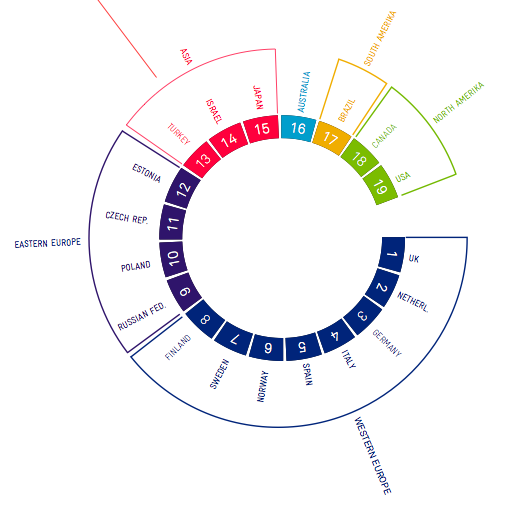
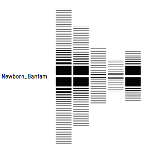

Monitoring and Visualizing Last.fm
In their final year project, Monitoring and Visualizing Last.fm,
Christopher Adjei and Mils Holland-Cunz use data from Last.fm to create
visualizations that help identify new music trends as they spread
around the world. This is one of the more stunning sets of
visualizations of last.fm data that I've seen.



More visualizations with (German) descriptions of their procedures and stages of development are available here.
Beautiful!! I'm very impressed how many great ideas are in that thesis.
Posted by elias on January 13, 2009 at 01:50 PM EST #